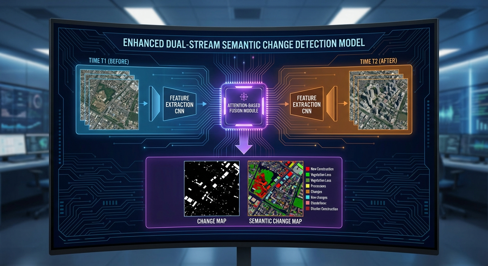
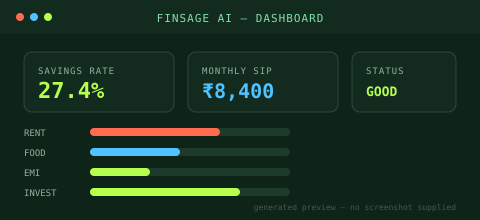
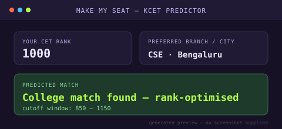

Full Stack Developer from Bengaluru, trained on real detection systems — from face‑mask CNNs to satellite change‑detection models — now shipping that same precision into web products.
I'm a Computer Science graduate from Siddaganga Institute of Technology, Bengaluru. Before I wrote my first line of frontend code professionally, I was already training CNNs to spot missing face masks in real time and building transformer‑based models to detect land‑use change from satellite imagery.
That background shows up in how I build products: I care about edge cases, I test against real data, and I don't ship a feature until I've checked what happens when the input is messy. I recently completed a frontend development internship at Technomedia Software Solutions, and I'm now looking for full‑stack roles where I can carry that same rigor into user‑facing software.
The languages, tools and systems I reach for most — grouped by where they show up in my work.
Education and experience, in the order they happened.
Technomedia Software Solutions Pvt. Ltd.
Completed a frontend development internship building and shipping UI features in a production codebase, including Make My Seat, a KCET seat-allotment prediction platform.
Siddaganga Institute of Technology
Focused coursework and projects in deep learning, computer vision and full‑stack development.
Siddaganga Polytechnic, Tumkur
Foundation in programming, data structures and systems that led into the CSE degree.
Systems that shaped how I think about building software — one still mid-build.
Real-time CNN detection deployed on Raspberry Pi, with an alert module for safety guidelines.

CNN + Transformer model for satellite change detection, published as a research paper.

AI-assisted personal finance advisor for Indian users — SIP advice, tax estimation, EMI checks, budget breakdown.

KCET seat-allotment prediction platform — enter your rank, get realistic college & branch matches. Built during my Technomedia internship.
Multi-tenant shift scheduling & swap-request API — JWT auth, RBAC, conflict-safe swaps. Backend live, clients in progress.
Open to full-stack roles and freelance work. I usually reply within a day.